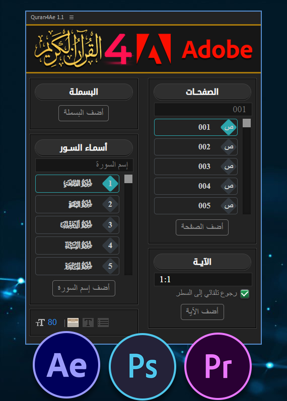

الحمد لله رب العالمين. والصلاة والسلام على أشرف المرسلين، وعلى آله وصحبه ومن والاه ومن تبعهم بإحسان وإهتدى بهديهم وسار على نهجهم إلى يوم الدين.
قمنا وبحمد الله بإنشاء هذه الأداة التي تسمح بإدراج النص القرآني بطريقة سهلة وميسرة على برامج أدوبي، تتيح هذه الأداة إضافة البسملة وإسم السورة والصفحة والآيات القرآنية بسرعة وسهولة إلى مشاريعكم مما يوفر الوقت والجهد، ... وصلى الله على نبينا محمدﷺ

تجدون في هذه الصفحة مجموعة من المعلومات حول أداة Quran 4 Adobe (Extension)
برنامج أدوبي أفتر إفكتس النسخة 13 فما فوق.
1- أولا تقوم بتحميل الأداة كما موضح في الصورة.

2- ثم تقوم بتفريغ الملف المضغوط إلى مجلد في جهازك.
3- تقوم بتثبيت جميع الفونتس الموجودة في المجلد fonts وذلك عن طريق تحديد جميع الفونتس والضغط على تثبيت كما موضح في الصورة.

4- ثم تقوم بوضع مجلد الأداة Quran4Adobe 1.1 في المكان المخصص للإضافات وهو :
C:\Program Files (x86)\Common Files\Adobe\CEP\extensions
5- والآن ما عليك إلا البدأ بإستعمال الأداة.
سيتم إضافة المزيد من التقنيات من وقت إلى آخر، وتحسين أداء الأداة في الأيام القادمة إن شاء الله، ولأي إستفسار أو إقتراح يرجى الإتصال بنا على قناتنا في اليوتوب : مكتبة المونتاج الإسلامية